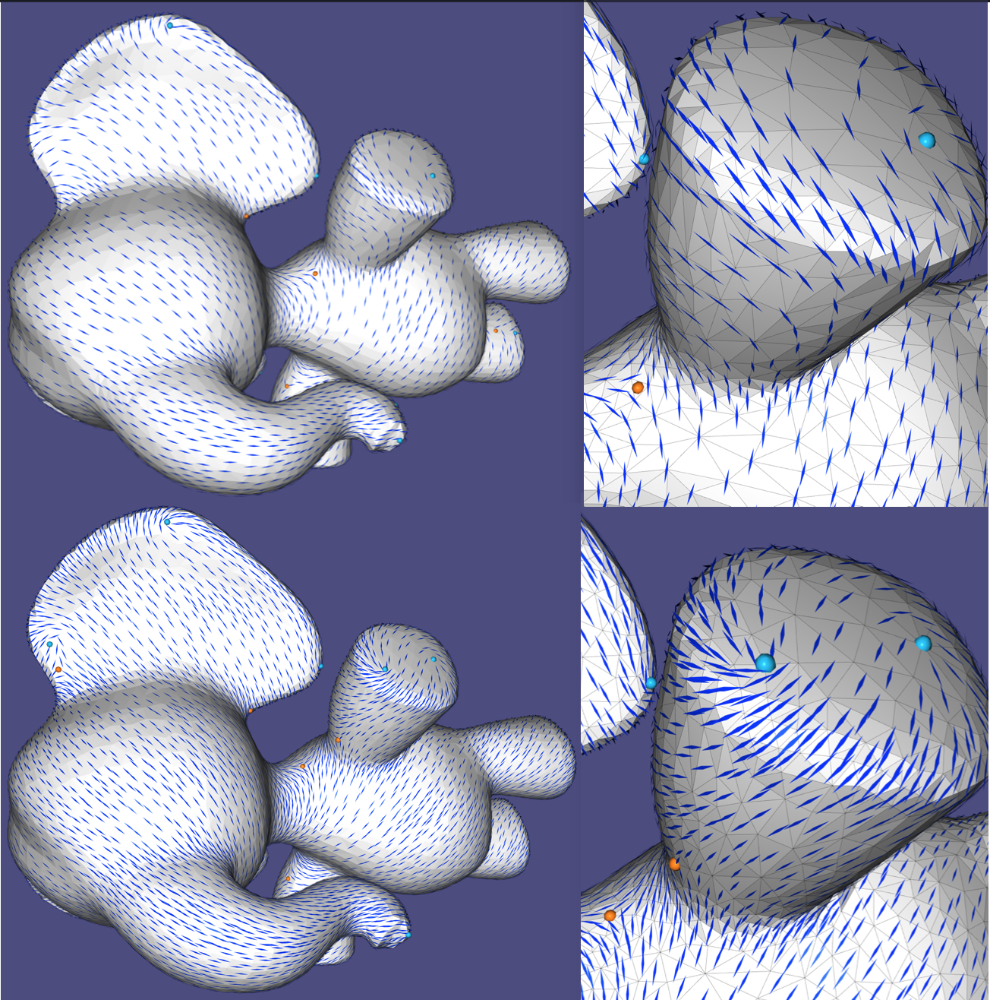
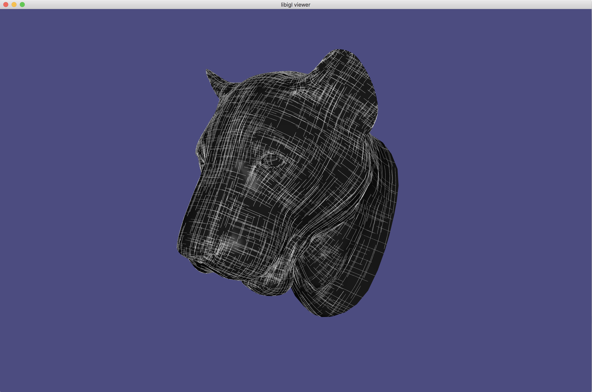
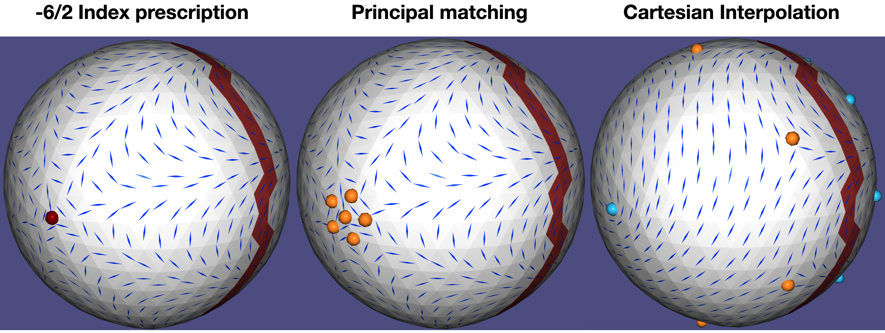
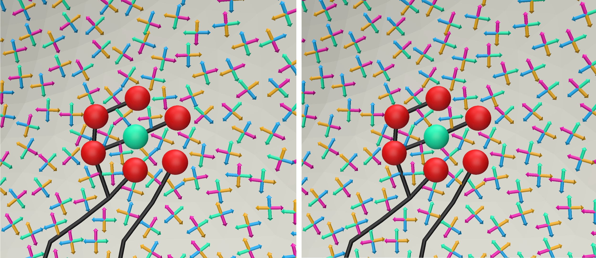
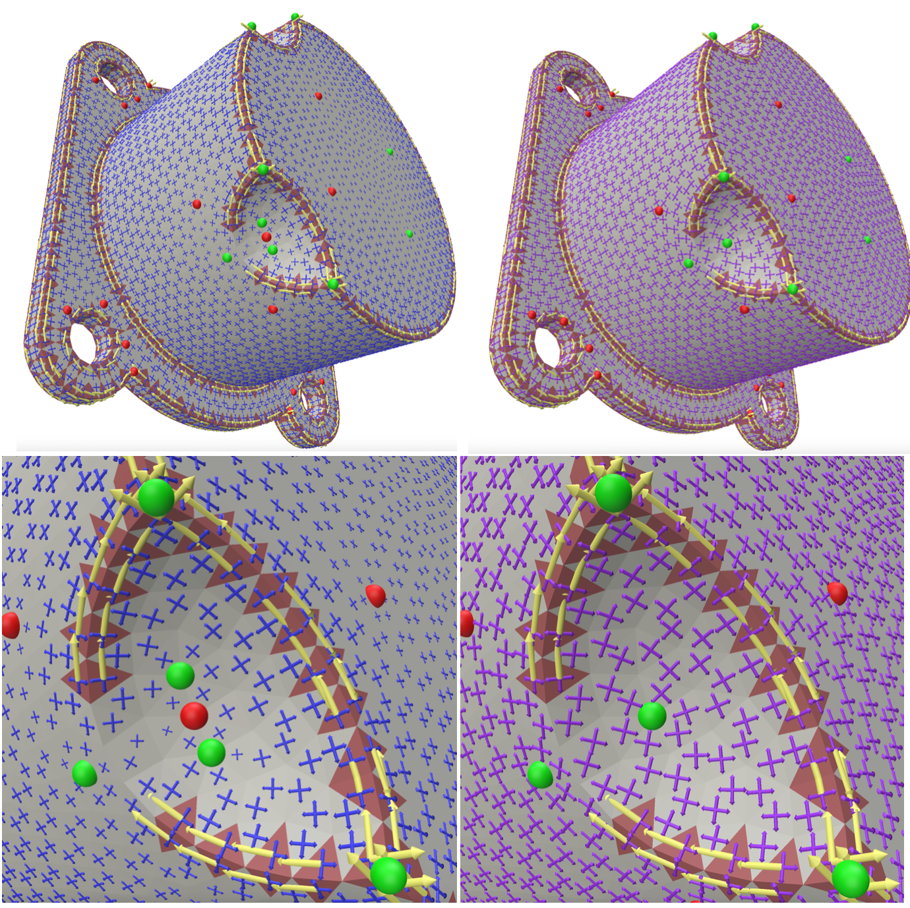
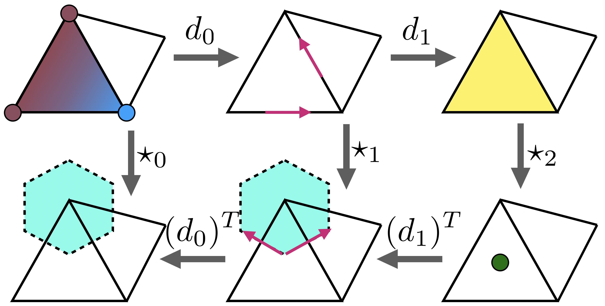
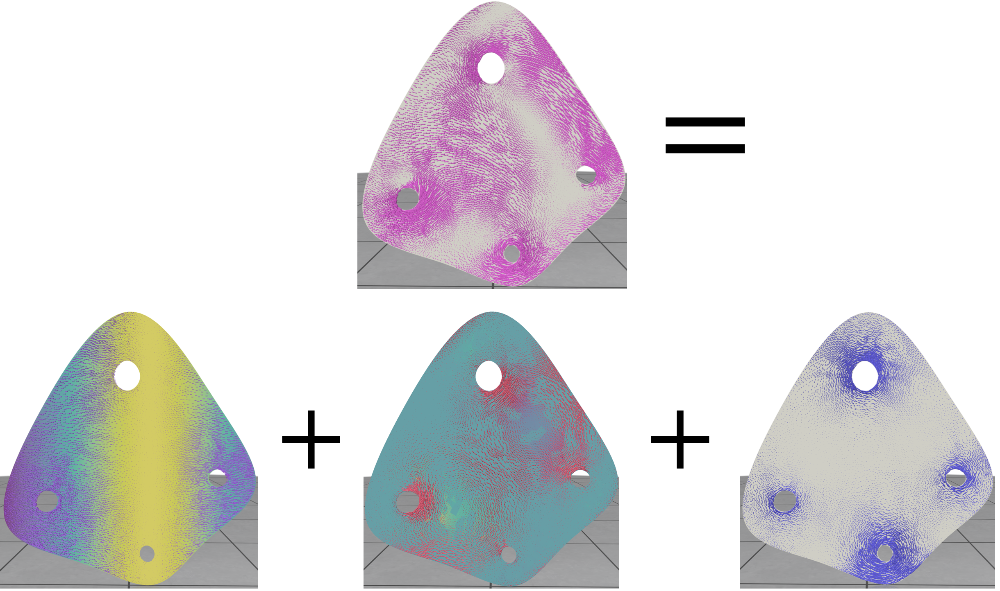

Directional Tutorial¶
Introduction¶
Directional is a C++ geometry processing library focused on directional-field processing. The functionality is based on the definitions and taxonomy surveyed theoretically in [Vaxman et al. 2016] and [de Goes et al. 2016], and in many newer papers in the literature, cited within context in this tutorial and the code. Directional contains tools to edit, analyze, and visualize directional fields of various degrees, orders, and symmetries.
Discretization in Directional is abstracted by general discrete tangent bundles that can represent a rich class of directional fields. As a result, many of the library’s algorithms can now work seamlessly on multiple representations without modification (for example, power fields can be computed on either vertex-based or face-based fields using the same function). The library comprises two basic elements:
-
Classes representing the basic tangent bundle and field structures. They are built with inheritance so that functions can be written polymorphically and consequently algorithms can be applied to several representations that have the minimal set of required properties.
-
Standalone functions, implementing directional-field algorithms, that take these classes as parameters.
-
Algebraic structures, such as cochain complexes.
Our paradigm avoids buffed classes with a complicated nested hierarchy; instead, the member functions in the classes are minimal, and only used to implement the essential properties of a geometric object (for instance, the connection between tangent spaces). Nevertheless, Directional strives to minimize the number of cumbersome parameters in functions and therefore relies considerably on (passive) data classes aggregating information about specific algorithms.
The library is header only, where each header contains a set of functions closely related (for instance, the precomputation and computation of some directional quantity over a mesh). For the most part, one header contains only one function. The atomic data structures are, for the most part, simple matrices in Eigen,
The visualization is done through a specialized class DirectionalViewer, which is a wrapper around PolyScope, with many extended options that facilitate the rendering of directional fields.
The header files contain documentation of the parameters to each function and their required composition; in this tutorial, we mostly tie the functionality of Directional to the theoretical concepts of directional fields and the methods to process and visualize them.
Installing the tutorial examples¶
This tutorial comprises an exhaustive set of examples that demonstrate the capabilities of Directional, where every subchapter entails a single concept. The tutorial code can be installed by going into the tutorial folder from the main Directional folder, and typing the following instructions in a terminal:
mkdir build
cd build
cmake -DCMAKE_BUILD_TYPE=Release ../
make
This will build all tutorial chapters in the bin folder. The necessary dependencies will be appended and built automatically. To build in Windows, use the cmake-gui .. options instead of the last two commands, and create the project using Visual Studio, with the proper tutorial subchapter as the “startup project”.
To access a single example, say 202_Sampling, go to the bin subfolder, and the executable will be there. Command-line arguments are never required; the data is read from the data folder directly for each example. Some examples save output data in the output folder.
Most examples require a modest amount of user interaction; the GUI should usually be clear on how to do this.
Discrete tangent bundles¶
In the continuum, directional fields are represented as elements (formally: sections) of tangent spaces, where a tangent space is a linear space attached to each point of a manifold. The set of all such tangent spaces is called a tangent bundle.
In the discrete setting, a tangent bundle is a finite graph G_{TB} = (V_{TB},E_{TB}) of tangent spaces. Each tangent space is an independent vector space of dimension d. This concept is implemented in the class TangentBundle. Discrete tangent bundles supply one or more of the following properties:
-
Intrinsic parameterization: vectors in a single tangent space are represented with coordinates \left(x_1,\cdots,x_d\right) in an arbitrary, but fixed basis of dimension d. The basis itself does not need to be specified for many algorithms; it can stay abstract.
-
Adjacency: a tangent bundle is represented as a graph where the tangent spaces are nodes, and the graph edges are adjacency relations that encode the local environment of any tangent space. This, in fact, encodes the combinatorial and topological structure of the underlying discrete manifold, akin to the smooth structure in the continuum.
-
Connection: a connection defines the notion of parallelity in two adjacent tangent spaces, which encodes a metric structure on the underlying manifold, and allows for computing derivatives and curvature. Specifically, a connection is a directed-edge-based quantity on the tangent-bundle graph, given as a change of coordinates between the bases of the source tangent space to the target tangent space. This can be represented as an orthogonal matrix.
-
metric The metric on the bundle is supplied in two quantities:
connectionMassis the weight of each edge E_{TB}, andtangentSpaceMasspacks the weights of an inner product on vectors on the bundle. That is, it has either V_{TB} or V_{TB}+E_{TB} that are the non-zero components of the vector mass matrix. -
Cycles: G_{TB} can be equipped with a notion of cycles F_{TB} that are simply-connected closed chains of spaces. Given a connection, the holonomy of a cycle is the failure of a vector to return to itself following a set of parallel transports around the cycle. Concretely, it is encoded in the logarithm of the product of connection matrices. In d=2, holonomy, which is then a single angle, is equivalent to the curvature of the cycle modulo 2\pi. There are two types of cycles, which define the topology of the underlying manifold: local cycles (akin to “faces” in G_{TB}), which are small closed loops, and global cycles, which can be homological generators and boundary loops. The singularities of fields are defined on the local cycles.
Oftentimes, the above intrinsic quantities are enough for all algorithms; nevertheless, for reasons of input, output, and visualization, a TangentBundle will contain the following, embedding-based extrinsic quantities:
-
Sources and normals: point locations and their normals (the codimensional directions of the manifold), which define the tangent planes of the manifold in the Euclidean space. Note that this doesn’t mean it’s a watertight mesh; that could also encode a point cloud, for instance.
-
extrinsic to intrinsic and back: functionality that projects extrinsic vectors into intrinsic space (might lose information), or produces the extrinsic representation of an intrinsic directional object.
-
Cycles sources and normals. Like sources and normals, but for the cycles themselves. These quantities mark the locations of the singularities in space, for visualization purposes.
Two main types are currently implemented in directional: PCFaceTangentBundle implements face-based tangent spaces for 2D triangle meshes, where the fields are tangent to the natural plane supporting the triangles. IntrinsicVertexTangentBundle implements vertex-based intrinsic tangent spaces, which parameterize the cone environment of the 1-ring directly[^Knoeppel_2013]
For example, this is how PCFaceTangentBundle implements the above quantities:
- Intrinsic parameterization: a local basis in every face.
- Adjacency: dual (inner) edges between any two faces.
- Connection: the rotation matrix between the bases of any two adjacent faces.
- Cycles: the local cycles are around vertex 1-rings, where singularities are then defined as (dual) vertex values, and global cycles are dual loops of generators and boundaries.
- Inner product: the natural face-based mass matrix (just a diagonal matrix of face areas).
- Sources are face barycenters, and normals are just face normals.
- The projection to the supporting plane of the face and encoding in local coordinates.
- Vertices and vertex normals (area-weighted from adjacent faces) are the cycle quantities.
Some of the choices above can be varied to different flavors of face-based fields (for instance, the metric culminating in the mass weights). PCFaceTangentBundle wraps around a an orientable input triangle mesh in a single connected-component. There are no other limitations on its genus or boundaries. If your input comprises several connected components altogether, you should use several tangent bundles.
Representation¶
The representation of a directional field is its encoding in each discrete tangent plane. The most important element is the number of vectors in each tangent plane, which we denote as the degree of the field N. Currently, Directional supports fields that are represented by explicit (intrinsic) coordinates, which we call a cartesian field, and are represented by the class CartesianField. Directional currently supports the following variants of Cartesian fields [Vaxman et al. 2016].
- Raw - a vector of d\times N entries represents an intrinsic 1^N-vector (a directional with N independent vectors in each tangent space) in dimension-dominant ordering: (X_{1,1},\ldots, X_{1,d}),(X_{1,2},\ldots,X_{2,d}),\ldots (X_{N,1},\ldots, X_{N,d}) per space (for instance, for d=3 and N=4 it would be xyzxyzxyzxyz ordering with 12 components per tangent space). Vectors are assumed to be ordered in counterclockwise order in most Directional functions that process raw fields. the memory complexity is then dN|V_{TB}| for the entire directional field. A Cartesian Field indicates being a raw field by setting
CartesianField::fieldTypetodirectional::RAW_FIELD. - Power Field - This is a unique type to d=2. It encodes an N-rotational-symmetric (N-RoSy) object as a single complex number y=u^N relative to the local basis in the tangent space, where the N-RoSy is the set of roots u \cdot e^{\frac{2\pi i k}{N}}, k \in [0,N-1]. The magnitude is also encoded this way, though it may be neglected in some applications. The memory complexity is then 2|V_{TB}|.
- PolyVector - Also unique to d=2, this is a generalization of power fields that represents an N-directional object in a tangent space as the coefficients a of a monic complex polynomial f(z)=z^N+\sum_{i=0}^{N-1}{a_iz^i}, which roots u are the encoded 1^N-vector field. In the case where the field is an N-RoSy, all coefficients but a_0 are zero. Note: A PolyVector that represents a perfect N-RoSy would have all a_i=0,\ \forall i>0, but a_0 would have the opposite sign from the power-field representation of the same N-RoSy. This is since the power field represents u^N directly, whereas a PolyVector represents the coefficients of z^N-u^N in this case. The memory complexity is 2N|V_{TB}|.
Directional provides a number of conversion functions to switch between different representations. Each of the functions is of the form rep1_to_rep2, where rep1 and rep2 are the representation names in the above list. e.g., polyvector_to_raw(). Some possible combinations are given by composing two functions in sequence. However, note that not every conversion is possible; for instance, it is not possible to convert from PolyVectors to power fields, as they do not possess the same power of expression. Converting into the more explicit raw representation is often needed for I/O and visualization, but not only.
Chapter 1: I/O and Visualization¶
Visualization paradigm¶
Directional uses a specialized class called directional::DirectionalViewer which wraps around PolyScope, augmenting it with functionality that pertains to directional fields. A mesh is then stored with its accompanying geometric quantities: the field, edge, vertex, and face-based scalar data, isolines, and more, that we detail in the tutorial per chapter in context. Like PolyScope, Directional supports independent multiple meshes, each with its own set of quantities. The viewer also returns the corresponding PolyScope quantities (for instance, the PolyScope::SurfaceMesh), so that one can use the entire functionality of PolyScope independently.
101 Glyph Rendering¶
The most basic operation on directional fields is reading them from a file and drawing them in the most explicit way. In this example, a mesh and a field are read from a file and visualized as follows:
directional::readOFF(TUTORIAL_DATA_PATH "/bumpy.off",mesh);
ftb.init(mesh);
directional::read_raw_field(TUTORIAL_DATA_PATH "/bumpy.rawfield", ftb, N, field);
directional::read_singularities(TUTORIAL_DATA_PATH "/bumpy.sings", field);
viewer.init();
viewer.set_surface_mesh(mesh);
viewer.set_cartesian_field(field);
viewer.launch();
The field is read in raw format (see File Formats), which is detailed in the Introduction. The field is face-based, and the singularities are consequently vertex-based,
The singularities and glyphs (and most other properties) can be toggled directly from the common PolyScope GUI. The field (and its singularities) are named field 0 and singularities 0, unless a custom name is provided by the user.

Glyph Rendering on a mesh with singularities.
102 Discrete Tangent Bundles¶
This example shows a Cartesian field computed (with the power-field method described in Example 301) on either a vertex-based tangent bundle or a face-based tangent bundle. This highlights the flexibility of choosing a discretization. The relevant code segments are:
directional::IntrinsicVertexTangentBundle vtb;
directional::PCFaceTangentBundle ftb;
...
void callbackFunc()
{
ImGui::PushItemWidth(100); // Make ui elements 100 pixels wide,
if (viewingMode==FACE_FIELD)
if (ImGui::Button("Toggle Vertex Field"))
viewingMode=VERTEX_FIELD;
if (viewingMode==VERTEX_FIELD)
if (ImGui::Button("Toggle Face Field"))
viewingMode=FACE_FIELD;
viewer.toggle_singularities(viewingMode==FACE_FIELD, 0);
viewer.toggle_singularities(viewingMode==VERTEX_FIELD, 1);
viewer.toggle_cartesian_field(viewingMode==FACE_FIELD,0);
viewer.toggle_cartesian_field(viewingMode==VERTEX_FIELD,1);
ImGui::PopItemWidth();
}
...
directional::readOBJ(TUTORIAL_SHARED_PATH "/elephant.obj", mesh);
viewer.init();
viewer.set_callback(&callbackFunc);
ftb.init(mesh);
vtb.init(mesh);
...
viewer.set_surface_mesh(mesh);
viewer.set_cartesian_field(rawFaceField, "Face-Based Field", 0);
viewer.set_cartesian_field(rawVertexField, "Vertex-Based Field", 1);
viewer.launch();
One can see the stages of computing a field: first reading a mesh (readOBJ()), then initializing the approxiate tangent bundle with the mesh (ftb/vtb.init()), and after computing the fields and converting it to raw format, setting the two fields (with appropriate names and ordinal numbers) to the scene. Note that a visual Cartesian field is a separate entity from a surface mesh; the visual quantities needed for Cartesian field are taken from its inner tangent bundle class (you can infact show the field “floating” without the underlying mesh. viewer.toggle_X() functions are used to control what’s shown.

Power fields on a face-based tangent bundle (left) and vertex-based (right)
103 Streamline Tracing¶
Vector fields on surfaces are commonly visualized by tracing [streamlines] (https://en.wikipedia.org/wiki/Streamlines,_streaklines,_and_pathlines). Directional supports the seeding and tracing of streamlines, for all types of directionals. The seeds for the streamlines are initialized using DirectionalViewer::init_streamlines(), and the lines are traced using DirectionalViewer::streamlines_next(). Each call to DirectionalViewer::advance_streamlines() extends each line by one triangle, allowing interactive rendering of the traced lines. The streamline have the same colors as the initial glyphs, where the colors fade into white as the streamline advance.

Tracing the original field (left) into streamlines (right)
104 Scalar quantities on meshes¶
It is possible to set and visualize scalar quantities on meshes at different discretization locations: either face based quantities that appear as flat colors per face, vertex-based (pointwise) quantities that interpolate linearly on faces, appearing smooth, and edge-based (integrated) quantities, that appear as flat quantities on a diamond mesh associates with each edge (taking a \frac{1}{3} of the area of each adjacent triangle). The is controlled by the DirectionalViewer::set_X_data() functions, which also allow the setting of the viewable range of the function (the rest is clipped). The code generating the image below is:
viewer.set_surface_face_data(faceData, "x of normal");
viewer.set_surface_vertex_data(vertexData, "sin(y)");
viewer.set_surface_edge_data(edgeData, "principal effort");

Edge-, Vertex- and face-based data on a mesh, with the field that induced the matching (Chapter 2).
105 Sparse glyph view¶
On big meshes, it might appear cumbersome to view all glyphs on every face. It is possible to only view the glyphs on a subsample of faces, by using the sparsity parameter in DirectionalViewer::set_cartesian_field(). This is an integer parameter that controls the density of the sampling, in terms of face distance. Note the setting of the unitToAvgLengthRatio parameter, which controls the length of a vector of unit magnitude, relative to the average edge length.

Dense (sparsity 0) and Sparse (sparsity 5) views of a field as glyphs
106 Principal directions¶
Principal directions, the directions of minimum and maximum normal curvature on a mesh, are important quantities for many applications. They are shown in the example below. The new code part is viewer.set_raw_field(), which allows setting a raw field without the entire data structure of a Cartesian field.

The minimum (left) and maximum (right) principal directions, computed on the vertices. The respective normal curvatures are color-coded.
Chapter 2: Discretization and Representation¶
In the following sections, we show some effects of working with different representations and converting between them.
201 Principal Matching¶
One of the fundamental operations in directional-field processing is matching. That is, defining which vectors in tangent space t_i correspond to those in adjacent tangent space t_j. In Directional, we only work with order-preserving matchings: if vector k in tangent space t_i is matched to vector m in t_j, then for any l \in \mathbb{Z}, vector k+l is matched to vector m+l (modulo N). Suppose that the orientation of the TB graph edge is t_i \rightarrow t_j. Then, the matching is encoded as m-k. Given a directional field, the matching is sometimes not known in advance (for instance, when the Cartesian field is input or computed), and it needs to be devised from the field.
Given a raw field (in assumed CCW order in every tangent space), and a matching, one defines the (sum of) rotation angles \delta_{ij} (measured against the parallel transport) as the effort of the matching. The process of principal matching [^diamanti_2014] computes the unique matching of least effort, which is within the range of [-N\pi, N\pi) (and therefore denoted as “principal”). It corresponds to the “smallest angle” matching for N-RoSy fields.
Principal matching is done through the function principal_matching(), which accepts a Cartesian field as a parameter and computes the following:
- The matching on each (directed) TB-graph edge. This is stored in the
matchingmember of the field class. - The indices of the cycles. The singular local cycles are stored in the corresponding
singLocalCyclesandsingIndicesof the field class.
Singularities are computed as the index of each local cycle from the effort around it. The index of a cycle is the sum of efforts around a cycle. A directional must return to itself after a cycle, and therefore, the index is an integer I when a vector m in the face ends up in vector m+I. Note that this can also include multiple full rotations (i.e., this is not taken modulo N), where the index can be unbounded. The fractional part of the index is encoded by the matching; however, matching alone cannot encode integral indices (for instance, a single vector field has trivial (Zero) matching anywhere, but can have singularities). This is the reason singularity indices are computed from summing up effort and not matching integers. Note that for face-based fields, the singular cycles are vertices, whereas in vertex-based fields, the singular cycles are faces. Further note that Directional computes singularities only around the local cycles. That is, principal_matching() does not update singularities around boundary or generator loops.
Note that the callback function in this example shows how to pick and select faces on a mesh.

A field with singularities is shown, with a selected face illustrating principal matching via colored vectors
202 Sampling¶
This is an educational example that demonstrates the loss of information when generating a Cartesian field from rotation angles, and then trying to retrieve them by principal matching. This causes low valence cycles and undersampling causes aliasing in the perceived field. There are three modes seen in the example:
-
Polar mode: The user can prescribe the index of a singularity directly, and compute the field with index prescription (see example 401). With this, the rotation angles between adjacent faces can be arbitrarily large, and appear as noise in the low-valence cycles.
-
Principal-matching mode: The rotations are reconstructed from the field, without prior knowledge of the prescribed singularity from the polar mode. The large rotations between adjacent faces are aliased, giving rise to a “singularity party”: many perceived singularities or a lower index.
-
In the interpolation mode, the field is interpolated from the constrained faces (red) to the free faces (white), keeping the red band fixed from the polar mode. We see a field that is smooth in the Cartesian sense, with more uniformly-placed singularities.

Left to right: the polar mode, the principal-matching mode, and the Cartesian mode.
203 Combing¶
Given a matching (in this case, principal matching), it is possible to “comb” the field. That is, re-index the vectors in each tangent space (keeping the CCW order), so that the vector indexing aligns perfectly with the matching to the neighbors—then, the new matching on the dual edges becomes trivially zero. This operation is important in order to prepare a directional field for integration. In the presence of singularities, the field can only be combed up to a forest of paths that connect between singularities, also known as seams. Note that such paths do not necessarily cut the mesh into a simply-connected patch, but may only connect subgroups of singularities with indices adding up to an integer; as a trivial example, a 1-vector field is always trivially combed, even in the presence of integral singularities, and the set of seams is empty. The combing is done through the function directional::combing(). The matching in the output combedField is already set to the trivial matching in the combed regions, and the correct matching across the seam.

Colored indices of an uncombed field (left), and a combed one (right). Seams are in black
Chapter 3: Cartesian Methods¶
Cartesian Fields¶
The Cartesian representation is a meta-category for representation of vectors in explicit coordinates, either \left(x,y\right) in some local 2D basis on a tangent plane, or \left(x,y,z\right) in the ambient coordinates of the 3D space. The raw, representative (of an N-RoSy), power field, and PolyVector representations are all such examples. Cartesian fields often do not automatically contain information about the matching, or rotation, of a field between one face and the next, and it needs to be computed using principal matching. This chapter focuses on computing fields with this representation.
301 Power Fields¶
This representation is offered in [Knöppel et al. 2013], but they did not give it a specific name (the method in general is called “globally optimal”). We use the name “power fields” which is coined in [Azencot et al. 2017]. A power field representation uses a complex basis in each tangent plane of a discrete tangent bundle, and represents an N-RoSy using a power vector: a single complex number Y per face so that its root set Y=u^N comprises the vectors of the N-RoSy.
By prescribing constraints Y_C on a set of tangent spaces C, the algorithm interpolates the field to the rest of the spaces Y_I = V_{TB} \setminus Y_C by minimizing the face-based quadratic Dirichlet energy:
where r_{fg} \in \mathbb{C} is the connection coefficient between tangent spaces f and g, and \omega_e are the connection weights. For instance, in the face-based PCFaceTangentBundle, r_{fg} = \frac{\overline{e_g}}{\overline{e_f}}, where e_f and e_g are the normalized edge vectors in their local complex bases, and the weights \omega_e are the harmonic weights as given by [Brandt et al. 2018]. The field is computed through the function directional::power_field(). It is possible to softly prescribe the constraints \left\{Y^*_C\right\} with alignment weights \omega_c, solving the following minimization problem:
where \omega_c, \forall c\in C are user-controlled. The control of soft vs. hard constraints is expressed in this part of the code:
void recompute_field()
{
directional::power_field(vtb, constVertices, constVectors, Eigen::VectorXd::Constant(constVertices.size(),-1.0), N,powerFieldHard, normalizeField);
directional::power_field(vtb, constVertices, constVectors, alignWeights, N,powerFieldSoft, normalizeField);
}
The alignWeights parameter can either express a soft constraint \omega_c, or, where it is smaller than zero, it encodes a hard constraint that will be interpolated (it’s possible to then mix both hard and soft constraints).
If the set C is empty, the field is only well-defined up to a global rotation; therefore, the algorithm arbitrarily sets a single vector in one tangent space and interpolates it to the rest of the mesh.

Hard (left) and soft (right) aligned constraints (yellow on red faces) interpolated to the rest of the mesh. Note the singularities that are discovered through principal matching.
302 PolyVectors¶
A Polyvector field [^diamanti_2014] is a generalization of power fields that allows for representing independent vectors in each tangent space, invariant to their order. The representation is as the coefficient set X_{0 \cdots N-1} of a monic complex polynomial in the local complex basis:
where the roots P(z)=0 are the vectors of the face-based directional object, represented as complex numbers in the local basis. The Dirichlet energy is as for power fields, except with a term for each X_i, with the appropriate power i. Note that an N-RoSy is represented as a polynomial where all X’s are zero except X_0. Principal matching, combing, and effort are well-defined on PolyVectors as well.
With the function polyvector_field() one can solve the linear Polyvector problem in its full capacity; the input is a set of prescribed hard constraints v_b per tangent space set B \subset V_{TB}, where one can prescribe any number of vectors smaller of equal than N (unless there is symmetry) per tangent space (that means we allow set C to have repeating tangent spaces). Further consider the soft-alignment vectors v_c for face set c \subset C, accompanied by an alignment weight \omega_c (again with possibly repeating tangent space). We then solve the following quadratic optimization problem:
So that the set B is perfectly interpolated. The matrices U_{c} and vectors u_{c} are designed to create a linear subspace of polynomials for which the respective vectors v_c are roots; for details see Appendix A in [Meekes and Vaxman 2021]. \omega_v is the mass of the tangent space (for instance, the area of a face in face-based fields). The last term then measures the soft alignment, also weighted by \omega_c per vector. The same technique is used as a hard reduction for the set B. The middle term subdues all non-free powers of P(z), thus optimizing P(z) to be as much a power vector as possible. The different energies are also controlled globally by user parameters \lambda_S, \lambda_R and \omega_c. It is also possible to constrain the field to be a perfect power field by setting \lambda_R=-1; in fact power_field() is implemented by calling polyvector_field(). This tutorial examples allows interacting with the alignment weights.
The algorithm is controled by the data structure PolyVectorData, with the important following fields:
struct PolyVectorData{
public:
//User parameters
Eigen::VectorXi constSpaces; // List of tangent spaces where there are (partial) constraints. The faces can repeat to constrain more vectors
Eigen::MatrixXd constVectors; // Corresponding to constSpaces.
...
int N; // Degree of field
const TangentBundle* tb; //The tangent bundle on which the field is defined
bool verbose; //whether to output anything
bool signSymmetry; // Whether field enforces a ssign symmetry (only when N is even, otherwise by default set to false)
double wSmooth; // Weight of smoothness
double wRoSy; // Weight of rotational-symmetry. "-1" means a perfect RoSy field (power field)
Eigen::VectorXd wAlignment; // Weight of alignment per each of the constfaces. "-1" means a fixed vector
...
};
wSmooth is \lambda_S, wRosy is \lambda_R, and wAlignment is \omega_c (and where it is -1 this marks a constraint in B). verbose should be flagged when output is expected (false by default), and signSymmetry is flagged when the algorithm should enforce that for every vector u in any single PolyVector in a tangent space, the PolyVector also contains -u (only if N is even); it is true by default.

Top: Sharp-edge constraints (left; note sometimes more than one per face), Hard (middle) and soft (right) solution. Bottom: dominant-weighted alignment (left), and rotational symmetry (right).
Extension: PolyVector Iterations: The polyvector algorithm allows for alternate smooth-and-project iterations, which are commonplace in many algorithms. The next two subchapters of Chapter 3 are examples.
303 Ginzburg-Landau Fields¶
We demonstrate how to compute fields that minimize the so-called “Ginzburg-Landau functional” [Viertel and Osting 2017]: $$ \int{|\nabla v|^2} + \frac{1}{\epsilon}\int{(|v|2-1)2}, $$ for some penalty \epsilon that is assumed to be taken \epsilon\rightarrow 0. We employ the common MBO algorithm of repeated iterations of smoothing and renormalization. This introduces the polyvector iteration mechanism:
//Computing a regular PolyVector field without iterations
directional::polyvector_field(pvData, pvFieldOrig);
directional::polyvector_to_raw(pvFieldOrig, rawFieldOrig, N%2==0);
directional::principal_matching(rawFieldOrig);
//Iterating for a smoothest perfect-RoSy field
pvData.iterationMode = true;
int numIterations = 100;
std::vector<directional::PvIterationFunction> iterationFunctions;
iterationFunctions.push_back(directional::hard_rosy);
directional::polyvector_field(pvData, pvFieldGL);
directional::polyvector_iterate(pvData, pvFieldGL, iterationFunctions, numIterations);
directional::polyvector_to_raw(pvFieldGL, rawFieldGL, N%2==0);
directional::principal_matching(rawFieldGL);
The new parts are the function polyvector_iterate that runs an iterative algorithm comprising:
-
An implicit step reducing the PolyVector energy.
-
Projection steps controlled by all the
pvIterationfunctions in the order they are input.
The basic version is highly configurable, including switching steps (1) and (2), and is controlled by the PolyVectorData structure. This includes, for instance, the ability to slow the implicit step (equivalent to playing with \epsilon) according to some scheduling. In the GL example, we simply include a project of a polyvector to a perfect RoSy field, using the hard_rosy() function.

Left: The original PolyVector Fields. Right: After MBO iterations. Note the improved singularity in the zoom-in.
304 Integrable Fields¶
This functionality only works with face-based fields via IntrinsicFaceTangentBundle.
Vector-field guided surface parameterization is based on the idea of designing the candidate gradients of the parameterization functions (which are tangent vector fields on the surface) instead of the functions themselves. Thus, vector-set fields (N-Rosy, frame fields, and polyvector fields) that are to be used for parameterization (and subsequent remeshing) should be as integrable as possible: it should be possible to locally comb them into individual vector fields that are approximately gradients of scalar functions. Fields obtained by “as-smooth-as-possible” design methods do not have this property in general.
In modern methods, this is usually achieved by a smooth-and-reduce-curl approach, which is again doable by the PolyVector Iterations, and using the following projection functions:
iterationFunctions.push_back(directional::soft_rosy); iterationFunctions.push_back(directional::curl_projection);
soft_rosy() works by only taking the PolyVector part-way towards a perfect RoSy, and curl_projection() does principal matching, and then projects out the curl of the field. Following the iterations, the field is by design curl-free numerically, and the curl_matching() retrieves it.

Left: The original PolyVector Fields. Right: An Integrable field (the curl is color-coded with maximum of 0.09 at yellow).
Chapter 4: Polar Methods¶
Polar Fields¶
Polar fields are represented using angles. These angles may encode the rotation from some given basis on a tangent space (and so it is a “logarithmic” representation, when compared to Cartesian methods), or an angle difference between two neighboring tangent spaces (in the sense of deviation from parallel transport). The former usually requires integer variables for directional-field design. The latter does not, but state-of-the-art methods require the prescription of indices around independent dual cycles in the mesh. Currently, Directional supports the latter.
401 Index Prescription¶
The notion of encoding rotation angles on dual edges, as a means to encode deviation from parallel transport between adjacent tangent planes, appeared in several formats in the literature [Ray et al. 2008]. The formulation and notation we use in Directional is that of Trivial Connections [Crane et al. 2010]. Trivial connection solves for a single rotation angle \delta_{ij} per (dual) edge e_{ij} between two faces f_i and f_j, encoding the deviation from parallel transport between them. The algorithm first computes a spanning set of basis cycles, around all of which the sum of \delta_{ij} has to be prescribed. The summation is defined as a matrix H. Every such cycle (row in the matrix) has an original curvature K_0, and the prescribed index defines an alternative curvature that is induced by the vector field (and hence it’s a trivial connection). The algorithm solves for the smoothest field, in the 2-norm least squares sense, as follows:
H is the matrix that defines the basis-cycles sum, K_0 is a vector of the original curvatures of every basis cycle, and K is the prescribed curvatures, which result from prescribed singularity indices: for regular cycles, we prescribe K=0, and for a singular cycle with prescribed singularity index \frac{i}{N}, we set K=\frac{2\pi i}{N}. the sum of K has to conform to the Poincaré index theorem. However, generator (handle) cycles can admit unbounded indices. See [^crane_2010] for exact details. If the input obeys the sum, the result obeys the prescribed indices around the cycles everywhere. The representation is differential, where the single global degree of freedom is resolved by setting a single direction in a single arbitrary face. Note that the correct definition for “cycle curvature” corresponds to the so-called “cycle holonomy”, only up to integer multiples of 2\pi.
Basis Cycles¶
The basis cycles form the cycles around which curvatures (and singularities) have to be prescribed on the mesh. The sum on basis cycles is described in a sparse matrix H of size |cycles|\times |E_I|, where E_I is the number of non-boundary (inner) edges in the tangent bundle G_{TB}. Each row in the matrix describes the sum over one cycle, and contains 1 or -1 values depending on the (arbitrary) orientation of the dual edge participating in the cycle to the respective face. The types of indices are defined in The introduction. The singularity indices that are prescribed contain the singularity index corresponding to each basis cycle. A value of k \in \mathbb{Z} represents an \frac{2\pi k}{N} rotation around the respective cycle. If the prescribed indices do not conform to the Poincaré index theorem, a result will still be computed by least squares, but it will be unpredictable. The algorithm is performed through the function directional::index_prescription(), which can also accept a solver for precomputation, for the purpose of prefactoring H only once.

Indices are prescribed on several vertex singularities, and on a generator loop, to match the index theorem.
Chapter 5: Seamless Integration and Meshing¶
The full details of the method implemented in this chapter can be found in a technical report [Vaxman 2021]. Many of the therotical ideas for general N-functions are explored in [Meekes and Vaxman 2021]. Moreover, this chapter currently only works with IntrinsicFaceTangentBundle.
N-Directional fields are commonly used as candidate gradients to seamless N-Functions, which are in turn used to generate meshes that are aligned to the original fields Bommes et al. 2009,Kälberer et al. 2007,Myles et al. 2014. Recall that combing trivializes the matching everywhere except a sparse set of seams. We augment these seams so that the mesh is cut into a topological disc. Then, we treat a combed N-directional \left\{u_0,\cdots,u_{N-1} \right\} as a set of N candidate gradients for N vertex-based scalar functions \left\{F_0,\cdots,F_{N-1}\right\} on the cut mesh. We proceed by solving the Poisson problem:
Consider a seam edge e_{ij} between original vertices v_i and v_j, and between adjacent faces f_k and f_l. The two vertices are then cut into four corners v_{i,k},v_{j,k},v_{i,l},v_{j,l}. Note that some corners might be identical, if the seam edge is at a singularity. Across the seam edge, we enforce the (linear) seamless conditions:
where \pi_e:N \times N is a permutation matrix attached to the (dual) edge e, matching values in the integrated function F as it did for the directional field v. and T_e:N \times 1 is a translational jump (also: period jump), that encodes the discontinuity in F across the seam. For quick intuition, this encodes the integration of the function over a loop around the mesh beginning and ending with the seam edge: in a 4-function, leading to a quad mesh, it is the number of quads in such a loop. If T_e \in \mathbb{Z}^N, then the N-function is fully seamless: the integer isolines of a function connect perfectly along a seam. Otherwise, it is only permutationally seamless: the gradients match, which means they are only co-oriented.
Seamless N-functions are denoted as such for that obeying the seamless constraints; it can be easily shown [Kälberer et al. 2007] that the translational jumps T_e is in fact uniform across seam curves between singularities. Thus, the number of such translational jump variables is the number of seam curves in the mesh (\times N).
501 Seamless Integration¶
In this example, we demonstrate the computation of such a integration, both permutationally, and fully seamless. The computed function is a 4-function with sign-symmetry, computing seamless (U,V,-U,-V) functions that we demonstrate as a quad texture. The core functionality is in these lines:
directional::IntegrationData intData(N);
...
directional::setup_integration(rawField, intData, meshCut, combedField);
intData.integralSeamless=false;
...
directional::integrate(combedField, intData, meshCut, cutUVRot ,cornerWholeUV);
...
intData.integralSeamless = true;
directional::integrate(combedField, intData, meshCut, cutUVFull,cornerWholeUV);
The data structure containing all relevant information about the integration is IntegrationData. It contains some parameters that can be tuned to control the integration. Several relevant ones are:
double lengthRatio; //global scaling of functions
//Flags
bool integralSeamless; //Whether to do full translational seamless.
bool roundSeams; //Whether to round seams or round singularities
bool verbose; //output the integration log.
lengthRatio encodes a global scale for the Poisson problem (scaling the fields uniformly), where the ratio is measured against the bounding box diagonal. Some of the other parameters are demonstrated in the other examples in this chapter. The integrator takes the original (whole) mesh, and generates a cut-mesh (in VMeshCut,FMeshCut) of disc-topology. The singularities are on the boundary of this mesh, and the function can consequently be defined without branching ambiguity on its vertices, with the appropriate permutation and translation across the cut seams.

Left: directional field. Center: permutationally-seamless integration. Right: fully-seamless integration.
502 Integration in various orders¶
Directional can handle integration for every N, including less common ones like the non-periodic N \neq 2,3,4,6. The properties of fields and integration in such unconventional N are explored in [Meekes and Vaxman 2021].
In this example, we demonstrate the results for N=2,4,7,11, for the same lengthRatio. All are fully seamless. Note that the density of the isolines increases with N, and that we round the singularity function values, leading to junctions of multiple isolines meeting.

Left to right: N=2,4,7,11. Top: field. Bottom: integer isolines.
503 Rounding either seams or singularities¶
It is possible to choose whether to round the seam jumps T_e \in \mathbb{Z}^N directly, or the function values around singularities (and of topological handles, in case of non-simply-connected topology). In both cases, the seams will have integer values, but the latter case is more restrictive and will result in multiple isolines meeting at every singularity. For quad meshes with N=4, for instance, this is the difference between pure-quad results (round singularities), or just quad-dominant (round seams).

Left to right (bottom is zoom-in of top): Field, rounding only seams (leading to the top singularity being offset), and rounding singularity function values directly.]
504 Linear Reductions¶
It is possible to constrain the functions to have linear relations between them, which reduce the degrees of freedom. This is done by inputting a matrix U: N \times n so that n \leq N, and where F = U\cdot f for the independent degrees of freedom encoded in f. This relationship should be mirrored in the integrated directional field. Warning: not every linear reduction is suitable for integration on surfaces! it needs to commute with the permutation around singularities. Feeding an incompatible linear reduction might then result in a failure of the algorithm. One popular example is triangular symmetry where U_{3 \times 2} = [1, 0; 0, 1; -1, -1]. Another is sign symmetry where U = [Id_{n \times n}; -Id_{n \times n}], and n = \frac{N}{2}. The latter is always assumed when N is even, and both are always valid in any singularity configuration. Symmetries can also be combined. U is fed into intData through the field linRed, and there are pre-made funtcions to set it, such as set_triangular_symmetry(int N).

Top: A 6-directional fields with a singularity. Bottom left: N=6 only sign symmetry is enforced (the three lines don’t always meet at all intersections). Right: the same with added triangular symmetry, where all lines intersect.
505 Meshing¶
This subchapter demonstrates how we can create an actual polygonal mesh from the arrangement of isolines on the surface. This creates an arrangement of lines (in exact numbers) on every triangle, and stitches them together across triangles to get a complete conforming mesh. The new mesh is given in the libhedra format of (V,D,F), where D is a vector |F| \times 1 of face degrees, and F is a |F| \times max(D) matrix of indices into V.
The meshing unit is independent from the integration unit, and can be potentially used with external functions. However, it is easy to pipeline iit with the integration as follows:
//setting up mesh data from integration data
directional::MesherData mData;
directional::setup_mesher(meshCut[i], intData, mData);
//meshing and saving
mData.verbose = false;
std::cout<<"Meshing N="<<N[i]<<std::endl;
directional::mesher(meshWhole, mData, VPolyMesh[i], DPolyMesh[i], FPolyMesh[i]);
std::cout<<"Done!"<<std::endl;
This reads the integrated information from intData. Conversely to previous version, the mesher does not necessarily need an external dependency. Nevertheless, it can optionally be sped up (considerably) by including GMP. This is controlled by CMake within the compilation of the tutorial.

Left to right: polygonal meshes of the arrangements of isolines from the N=4,7,11 examples (N=2 is not yet supported) in Example 502.
Chapter 6: Cochain Complexes¶
Directional fields, and differential forms, are objects of differential geometry where the underlying manifold is equipped with notions of gradient, curl, divergence, and where gradient fields are curl free and cogradient fields (or just “curl fields”) are divergence free. These are special cases of the more abstract algebraic notion of cochain complexes. Without going into the full formality, such a complex is defined by a series of spaces \Omega_i, 0 \leq i \leq d, for some dimension d, which are related by differential operators d_i:\Omega_i\rightarrow \Omega_{i+1}. These spaces can be equipped with a metric <>_i:\Omega_i \times \Omega_i \rightarrow \mathbb{R}^{+}. Essential to the definition is that d_{i+1}d_i=0. For instance, scalars to vectors by the gradient operator, and then vectors to scalars (in 2D) by the curl operators comprise a cochain complex. A cochain complex also defines i^{th} singular cohomologies, which are the quotient spaces \mathbb{H}_{i}=ker(d_{i})/im(d_{i-1}). These only arise in case of nontrivial topology, and |\mathbb{H}_i|=\beta_i are called the Betti numbers, which are in fact generators of the topology. The fields in these spaces are called harmonic. The metric also defines a Hodge star \star_i: \Omega_i\rightarrow\Omega_{d-i}, which is a duality relation; that often defines a dual cochain with a codifferential operator \delta_i = (-1)^i\star_i^{-1}d_i^T\star_{i+1}.
Example: All gradient fields are curl free, but there are only curl-free fields that are not also gradient in topologies like annuli or tori. the torus has genus 1 and admits two harmonic fields.
In the discrete setting, the spaces are represented as arrays of nodal values in some finite space, the d operators are (often sparse) matrices, and the metrics are implemented as symmetric positive matrices M so that <a,b>_i = a^TM_ib. The hodge star is then simply a multiplication by M_i. However, it is often that this defines a separate dual structure rather then result in an object of the same space.
Although abstract, the notion has multiple concrete manifestations in directional field processing, which we explore through the chapter’s examples.
601 Face-Based Finite Elements¶
What is called “face-based FEM” is in fact just the structure with face-based vectors depicted in the following figure:

Top: the primal cochain complex, taking conforming piecewise linear (PL) functions to face-based piecewise-constant fields, and the curl operator takes the latter to edge-based diamond regions. In the bottom dual structure (right to left), the rotated cogradient of non-conforming piecewise-linear functions are also piecewise-constant fields. their divergence is defined on dual vertex voronoi areas. Going from PL functions to dual regions is done by the mass matrices M_v and M_e. The face rotation operator J simply rotates a vector by \frac{\pi}{2} in a face. The cochain structure is actually such that CG_v=0, and the matching dual cochain structure DJG_e=0
Which is popular in geometry processing (for instance, studied extensively in [Wardetzky 2007]. This is exemplified in the following code:
Eigen::SparseMatrix<double> Gv = directional::conf_gradient_matrix_2D<double>(mesh);
Eigen::SparseMatrix<double> Ge = directional::non_conf_gradient_matrix_2D<double>(mesh);
Eigen::SparseMatrix<double> J = directional::face_vector_rotation_matrix_2D<double>(mesh);
◊
Eigen::SparseMatrix<double> C = directional::curl_matrix_2D<double>(mesh);
Eigen::SparseMatrix<double> D = directional::div_matrix_2D<double>(mesh);
Ge is the non-conforming (Edge-based) cogradient, and J is the in-face rotation matrix. The code proceeds by verifying the cochain relations (discrete curl of gradient and divergence of rotated cogradient):
std::cout<<"max abs curl of exact field (should be numerically zero): "<<(C*Gv*confVec).cwiseAbs().maxCoeff()<<std::endl;
std::cout<<"max abs divergence of coexact field (should be numerically zero): "<<(D*J*Ge*nonConfVec).cwiseAbs().maxCoeff()<<std::endl;

Left: a conforming PL function with its gradient. Right: a non-conforming PL function with its rotated cogradient.
602 Discrete Exterior Calculus¶
DEC [Desbrun et al. 2005] is primarily working with differential forms rather than vector fields. As such, it decouples metric from differentials. In the discrete setting, 0-forms (Scalar functions) are represented on vertices, 1-forms (the equivalent of tangent vector fields) as differentials on oriented edges, and 2-forms (volume forms in 2D) as numbers on faces indicating an integrated quantity. The Hodge star defines a duality to the dual Voronoi mesh, as in the following diagram:

Top: the primal complex, where d_0 is the differential (EQuivalent of gradient), d_1 is the equivalent of curl, and their adjoints (up to Hodge duality) are the equivalents of rotated cogradient and divergence.
The sharp operator converts the discrete forms into their continuous counterparts, which in the PL case are Whitney forms (for instance, for 0-forms it’s just PL functions, as illustrated above). These can be used to create the mass matrices M_0,M_1,M_2 to be served as Hodge stars. However, it is sometimes preferred to lump M_1 to the primal/dual hodge star \star_1, since it provides an easy inverse, albeit less accurate in some interpretations. Directional offers both options:
Eigen::SparseMatrix<double> d0 = directional::d0_matrix<double>(mesh);
Eigen::SparseMatrix<double> d1 = directional::d1_matrix<double>(mesh);
Eigen::SparseMatrix<double> hodgeStar, invHodgeStar;
directional::hodge_star_1_matrix(mesh, hodgeStar, invHodgeStar);
Eigen::SparseMatrix<double> M1;
directional::linear_whitney_mass_matrix(mesh, M1);
Eigen::SparseMatrix<double> L1 = d0.adjoint()*M1*d0;
Eigen::SparseMatrix<double> L2 = d0.adjoint()*hodgeStar*d0;
Eigen::SparseMatrix<double> diff = L1-L2;
double maxAbsValue = 0.0;
for (int k = 0; k < diff.outerSize(); ++k)
for (Eigen::SparseMatrix<double>::InnerIterator it(diff, k); it; ++it)
maxAbsValue = std::max(maxAbsValue, std::abs(it.value()));
std::cout<<"Exact laplacian identity (should be numerically zero): "<<maxAbsValue<<std::endl;
directional::project_exact(d1, hodgeStar, z2, z1Diag, z2Exact, true);
std::cout<<"Reproducing the original curl (z2Diag, should be numerically zero): "<<(z2-z2Exact).cwiseAbs().maxCoeff()<<std::endl;
directional::project_exact(d1, M1, z2, z1, z2Exact, true);
std::cout<<"Reproducing the original curl (z2, should be numerically zero): "<<(z2-z2Exact).cwiseAbs().maxCoeff()<<std::endl;
std::cout<<"Difference between z1 and z1Diag (small, not zero): "<<(z1-z1Diag).cwiseAbs().maxCoeff()<<std::endl;
The differences will only be culminated in the last z1 vs. z1Diag. Other than the functions to construct the operators, this also introduces the project_exact() function which we discuss in the next tutorial example.

Left: The reconstructed field with the Whitney 1-form mass matrix. Right: with the diagonal Hodge star. The visual difference in this case is mild.
603 Hodge Decomposition¶
The combination of a cochain complex and metric introduces the Hodge decomposition, where we can also define the codifferential \delta_i = (-1)^i\star_i^{-1}d_{i}^T\star_{i+1}. Every i-form z_i \in \Omega_i, 1\leq i \leq n-1 can be decomposed as: $$ z_i = d_{i-1}f_{i-1}+\delta_i g_{i+1} + h_i, $$ where f_{i-1} is an (i-1)-form, g_{i+1} is an (i+1)-form, and h_i \in \mathbb{H}_i is a harmonic i-form. z_\text{exact}=d_{i-1}f_{i-1} is the exact component, and z_\text{coexact}=\delta_{i+1}g_{i+1} is the coexact component. The exact, coexact and harmonic compoennts are always unique; however, f,g (the potentials) might not be, and one might need to further constrain them.. The existence of boundaries makes the problem even more intricate, as we discuss in Example 604.
Hodge decomposition in directional is done by the function Hodge_decomposition(). To understand how it works, we need to examine its implementation:
project_exact(d, M, cochain, prevCochain, exactCochain);
project_coexact(dNext, M, MNext, cochain, k, coexactCochain, nextCochain);
harmCochain = cochain - exactCochain - coexactCochain;
project_exact() finds f and consequently the exact part. In case d_0 has a trivial null-space, the default option its to solve the Poisson equation:
$$
f = \text{argmin}|d_{i-1} f - z_i|^2.
$$
The least-squares solution is obtained where:
$$
d_{i-1}^T\star_i d_{i-1}f = d_{i-1}^T\star_i z_i
$$
In case d_i has a meaningful null-space (for instance, when it is part of a longer ccochain complex, and f itself has a non-trivial Hodge decomposition), one should instead opt for a Gauge-fixing solution, where we solve for the minimum 2-norm solution: $$ f = \text{argmin}|f|2 s.t. d_{i-1}T\star_i d_{i-1}f = d_{i-1}^T\star_i z_i. $$
In terms of code arguments, d is d_{i-1}, M is \star_i, prevCochain is f and exactCochain is d_{i-1}f. Fixing Gauge is controlled by a GagueFixing flag and is by default False.
project_coexact() is simpler, as it just computes:
$$
z_\text{coexact} = \text{argmin}|z_\text{coexact}|^2 s.t. d_iz_\text{coexact} = d_iz_{i}
$$
This amount to an orthogonal projection of z_i to the space of coexact forms. Interestingly, the Lagrange multipler of this contraint is exactly the desired potential g.

Top: a piecewise-constant face-based vector field. Bottom: its decomposition into exact, coexact, and harmonic forms. The colors indicate the potential fields (left f and middle g).
604 Hodge decomposition with boundaries¶
In the case of boundaries, \delta and d are not adjoint anymore without setting explicit boundary conditions. These can be intricate in higher dimensions, but in 2D surfaces can usually be the choice between Dirichlet or Neumann. This culminates in the construction of the operators themselves. For instance:
template<typename NumberType>
Eigen::SparseMatrix<NumberType> d0_matrix(const TriMesh& mesh,
const bool isDirichlet=false)

Top: a 1-form. Bottom: its decomposition into exact, coexact, and harmonic forms with Neumann boundary conditions (coexact and harmonic are tangent to the boundaries). The colors indicate the potential field (left f and middle g).
605 Harmonic Fields¶
it is possible to enumerate the harmonic fields as the null-space independent vectors (cohmology) of the harmonic operator. This is obtained through cohomology_basis().

Two example of harmonic fields. They are naturally associated to homologies (handles) of the surface.
Outlook for continuing development¶
Directional is a an ever-evolving project, and there are many algorithms in the state-of-the-art that we look forward to implement, with the help of volunteer researchers and practitioners from the field. Prominent examples of desired implementations are:
-
Support for 3D fields, particularly Octahedral fields [^solomon_2017], both in tet meshes and with the boundary-element method.
-
Support for tensor fields.
-
Higher-order fields.
References¶
Azencot et al., 2017 : Omri Azencot, Etienne Corman, Mirela Ben-Chen, Maks Ovsjanikov, Consistent Functional Cross Field Design for Mesh Quadrangulation.
Bommes et al., 2009 : David Bommes, Henrik Zimmer, Leif Kobbelt, Mixed-integer quadrangulation.
Bommes et al., 2012 : David Bommes, Henrik Zimmer, Leif Kobbelt, Practical Mixed-Integer Optimization for Geometry Processing.
Bouaziz et al., 2012 : Sofien Bouaziz, Mario Deuss, Yuliy Schwartzburg, Thibaut Weise, Mark Pauly, Shape-Up: Shaping Discrete Geometry with Projections.
Brandt et al., 2018 : Christopher Brandt, Leonardo Scandolo, Elmar Eisemann, Klaus Hildebrandt, Modeling n-Symmetry Vector Fields using Higher-Order Energies.
Crane et al., 2010 : Keenan Crane, Mathieu Desbrun, Peter Schröder, Trivial Connections on Discrete Surfaces.
Cignoni et al., Meshlab : Paolo Cignoni, Marco Callieri, Massimiliano Corsini, Matteo Dellepiane, Fabio Ganovelli, Guido Ranzuglia, MeshLab: an Open-Source Mesh Processing Tool.
Custers & Vaxman, 2020 : Bram Custers, Amir Vaxman, Subdivision Directional Fields.
Desbrun et al., 2005 : Discrete Differential Forms for Computational Modeling.
Diamanti et al., 2014 : Olga Diamanti, Amir Vaxman, Daniele Panozzo, Olga Sorkine-Hornung, Designing N-PolyVector Fields with Complex Polynomials.
Diamanti et al., 2015 : Olga Diamanti, Amir Vaxman, Daniele Panozzo, Olga Sorkine-Hornung, Integrable PolyVector Fields.
de Goes et al., 2016 : Fernando de Goes, Mathieu Desbrun, Yiying Tong, Vector Field Processing on Triangle Meshes.
Kälberer et al., 2007 : Felix Kälberer, Matthias Nieser, Konrad Polthier, QuadCover - Surface Parameterization using Branched Coverings.
Knöppel et al., 2013 : Felix Knöppel, Keenan Crane, Ulrich Pinkall, Peter Schröder, Globally Optimal Direction Fields.
Liu et al., 2008 : Yang Liu, Weiwei Xu, Jun Wang, Lifeng Zhu, Baining Guo, Falai Chen, Guoping Wang, General Planar Quadrilateral Mesh Design Using Conjugate Direction Field.
Myles et al., 2014 : Ashish Myles, Nico Pietroni, Denis Zorin, Robust Field-aligned Global Parametrization.
Meekes & Vaxman, 2021 : Merel Meekes, Amir Vaxman, Unconventional Patterns on Surfaces.
Panozzo et al., 2014 : Daniele Panozzo, Enrico Puppo, Marco Tarini, Olga Sorkine-Hornung, Frame Fields: Anisotropic and Non-Orthogonal Cross Fields.
Ray et al., 2008 : Nicolas Ray, Bruno Vallet, Wan Chiu Li, Bruno Lévy, N-symmetry direction field design.
Solomon et al., 2017 : Justin Solomon, Amir Vaxman, David Bommes, Boundary Element Octahedral Fields in Volumes.
Vaxman et al., 2016 : Amir Vaxman, Marcel Campen, Olga Diamanti, Daniele Panozzo, David Bommes, Klaus Hildebrandt, Mirela Ben-Chen, Directional Field Synthesis, Design, and Processing.
Vaxman, 2021 : Amir Vaxman, Directional Technical Reports: Seamless Integration.
Viertel and Osting, 2017 : An Approach to Quad Meshing Based on Harmonic Cross-Valued Maps and the Ginzburg-Landau Theory.
Wang et al., 2023 : Stephanie Wang, Mohammad Sina Nabizadeh, Albert Chern, Exterior Calculus in Graphics.
Wardetzky, 2007 : Max Wardetzky, Discrete differential operators on polyhedral surfaces-convergence and approximation.